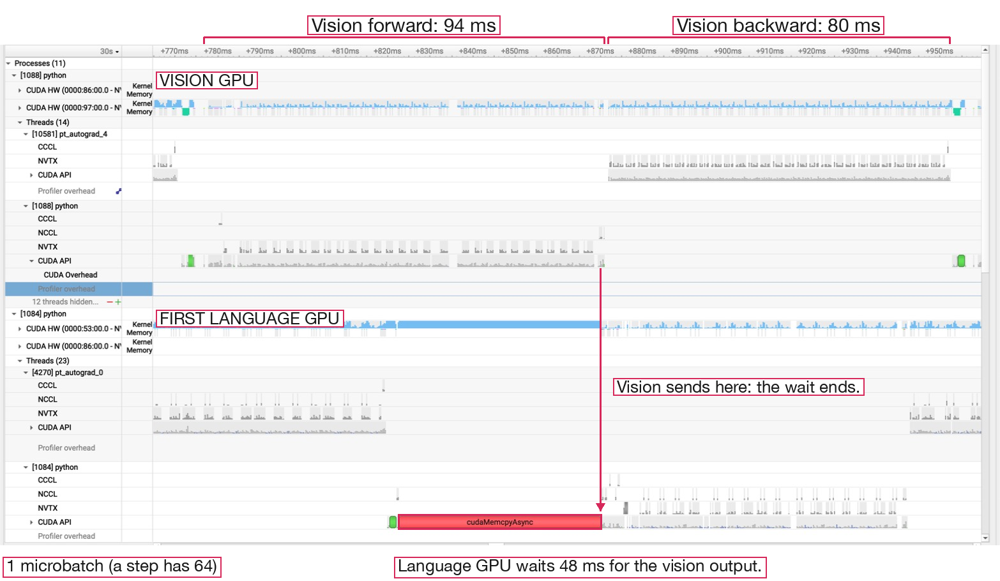
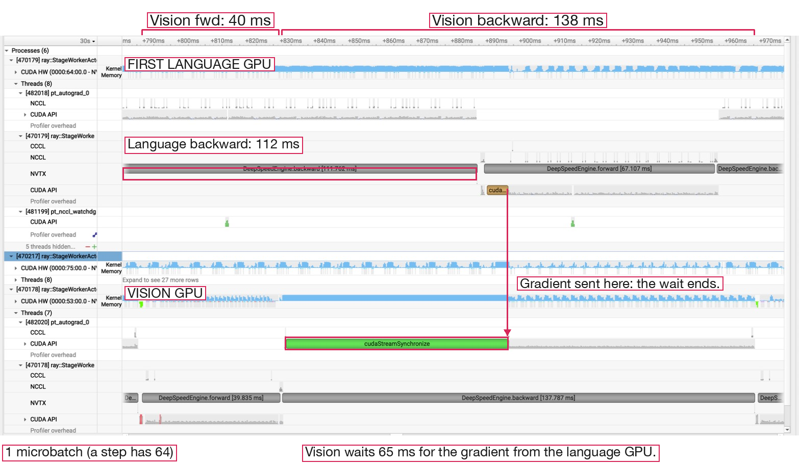

<title>9B MIMO vs rdsp</title>
<link rel="preconnect" href="https://fonts.googleapis.com">
<link rel="preconnect" href="https://fonts.gstatic.com" crossorigin>
<link rel="stylesheet" href="https://fonts.googleapis.com/css2?family=IBM+Plex+Mono:wght@400;600&family=IBM+Plex+Sans+Condensed:wght@600&family=IBM+Plex+Sans:wght@400;600&display=swap">
<style>
/* Layout: one reading column, figures full width of it, evidence in reading order */
:root {
  --bg: #f6f7f8; --surface: #ffffff; --fg: #1d232b; --muted: #5b6672; --line: #d9dee3;
  --bridge: #b5651d; --rdsp: #1f6f8b; --hot: #c9302c;
  --compute: #2b8a6e; --nccl: #7b62b8; --idle: #ffffff;
  --p0: #c9302c; --p1: #3e7fb0; --p2: #d39a2c; --p3: #8a5cc2; --p4: #8c96a1; --p5: #c5ccd3;
  --font-body: "IBM Plex Sans", "Helvetica Neue", Arial, sans-serif;
  --font-head: "IBM Plex Sans Condensed", "Arial Narrow", Arial, sans-serif;
  --font-mono: "IBM Plex Mono", ui-monospace, Menlo, monospace;
}
@media (prefers-color-scheme: dark) { :root:not([data-theme="light"]) {
  --bg: #12161b; --surface: #1a2027; --fg: #e4e8ec; --muted: #9aa5b1; --line: #2c343d;
  --bridge: #e39a55; --rdsp: #5fb3d3; --hot: #ff6b63; --compute: #4cc29d; --nccl: #a58be0; --idle: #1a2027;
  --p0: #ff6b63; --p1: #6aa9dc; --p2: #e8b54d; --p3: #b08ee6; --p4: #7d8894; --p5: #4a535d;
  color-scheme: dark; } }
:root[data-theme="dark"] {
  --bg: #12161b; --surface: #1a2027; --fg: #e4e8ec; --muted: #9aa5b1; --line: #2c343d;
  --bridge: #e39a55; --rdsp: #5fb3d3; --hot: #ff6b63; --compute: #4cc29d; --nccl: #a58be0; --idle: #1a2027;
  --p0: #ff6b63; --p1: #6aa9dc; --p2: #e8b54d; --p3: #b08ee6; --p4: #7d8894; --p5: #4a535d;
  color-scheme: dark; }
body { background: var(--bg); color: var(--fg); font: 16px/1.55 var(--font-body); }
main { max-width: 820px; margin: 0 auto; padding-inline: 20px; padding-block: 28px 64px; display: grid; gap: 28px; }
h1, h2 { font-family: var(--font-head); font-weight: 600; text-wrap: balance; margin: 0; line-height: 1.15; }
h1 { font-size: 2.1rem; } h2 { font-size: 1.45rem; }
p, li { max-width: 68ch; margin: 0; } ul, ol { margin: 0; padding-left: 1.3em; display: grid; gap: 4px; }
section { display: grid; gap: 12px; min-width: 0; }
.eyebrow { font: 600 0.78rem/1 var(--font-mono); letter-spacing: 0.06em; text-transform: uppercase; color: var(--muted); }
.muted { color: var(--muted); }
figure { margin: 0; background: var(--surface); border: 1px solid var(--line); border-radius: 6px; padding: 14px; display: grid; gap: 10px; min-width: 0; }
figure .chart { overflow-x: auto; } figure svg { display: block; width: 100%; min-width: 560px; height: auto; }
figcaption { font-size: 0.92rem; color: var(--muted); max-width: 72ch; }
.tablewrap { overflow-x: auto; }
table { border-collapse: collapse; width: 100%; font-variant-numeric: tabular-nums; }
th, td { text-align: left; padding: 7px 10px; border-bottom: 1px solid var(--line); white-space: nowrap; }
th { font: 600 0.8rem var(--font-mono); text-transform: uppercase; letter-spacing: 0.04em; color: var(--muted); }
td.num, th.num { text-align: right; }
tr.total td { font-weight: 600; border-bottom: none; }
.b { color: var(--bridge); font-weight: 600; } .r { color: var(--rdsp); font-weight: 600; }
.hotword { color: var(--hot); font-weight: 600; }
pre { margin: 0; overflow-x: auto; background: var(--surface); border: 1px solid var(--line); border-radius: 6px; padding: 12px 14px; font: 0.84rem/1.5 var(--font-mono); }
pre .hl { color: var(--hot); font-weight: 600; }
code { font-family: var(--font-mono); font-size: 0.9em; }
.headline { font-size: 1.15rem; }
svg text { fill: var(--fg); font-family: var(--font-body); }
svg .axis { fill: var(--muted); font-size: 12px; font-family: var(--font-mono); }
svg .rowlabel { font-size: 13px; font-weight: 600; }
svg .legend { font-size: 12.5px; }
svg .grid { stroke: var(--line); stroke-width: 1; }
svg .line { fill: none; stroke-width: 2; } svg .line.bridge { stroke: var(--bridge); } svg .line.rdsp { stroke: var(--rdsp); }
svg .median { stroke-width: 1; stroke-dasharray: 4 4; } svg .median.bridge { stroke: var(--bridge); } svg .median.rdsp { stroke: var(--rdsp); }
svg .label { font-size: 13px; font-weight: 600; } svg .label.bridge { fill: var(--bridge); } svg .label.rdsp { fill: var(--rdsp); }
svg .p0 { fill: var(--p0); } svg .p1 { fill: var(--p1); } svg .p2 { fill: var(--p2); } svg .p3 { fill: var(--p3); } svg .p4 { fill: var(--p4); } svg .p5 { fill: var(--p5); }
svg .inbar { fill: #fff; font-size: 12px; font-weight: 600; font-family: var(--font-mono); }
.shot { display: block; border: 1px solid var(--line); border-radius: 4px; overflow: hidden; }
.shot img { display: block; width: 100%; height: auto; }
.nums { display: flex; flex-wrap: wrap; gap: 12px 32px; }
.nums div { display: grid; gap: 2px; }
.big { font: 600 2rem/1 var(--font-head); font-variant-numeric: tabular-nums; }
ol.answer { gap: 10px; } ol.answer li { padding-left: 4px; }
h3 { font-family: var(--font-head); font-weight: 600; font-size: 1.15rem; margin: 8px 0 0; }
@media (max-width: 480px) { h1 { font-size: 1.7rem; } }

.nums { display: flex; flex-wrap: wrap; gap: 12px 32px; }
.nums div { display: grid; gap: 2px; }
.big { font: 600 2rem/1 var(--font-head); font-variant-numeric: tabular-nums; }
ol.answer { gap: 10px; }
h3 { font-family: var(--font-head); font-weight: 600; font-size: 1.15rem; margin: 8px 0 0; }
</style>
<main>
<header style="display:grid;gap:14px">
  <p class="muted"><a href="https://claude.ai/artifact/DwiJpTgif8NV8Y756vQupZ">← Back to the summary of all runs</a></p>
  <p class="eyebrow">Qwen3.5-9B · 5 H100 GPUs: vision on 1, language on 4 · 2026-10-11</p>
  <h1>MegatronMIMO vs rdsp on 9B</h1>
  <div class="nums">
    <div><span class="big r">9.11 s</span><span class="muted">a: rdsp, per step</span></div>
    <div><span class="big b">9.52 s</span><span class="muted">a: MIMO, per step</span></div>
    <div><span class="big">4%</span><span class="muted">a: rdsp faster</span></div>
  </div>
  <div class="nums">
    <div><span class="big r">8.22 s</span><span class="muted">b: rdsp, per step</span></div>
    <div><span class="big b">8.11 s</span><span class="muted">b: MIMO, per step</span></div>
    <div><span class="big">1%</span><span class="muted">b: MIMO faster (about even)</span></div>
  </div>
  <div class="tablewrap"><table>
    <tr><th>Layout</th><th>Vision encoder</th><th>Language model</th><th>Microbatches per step</th></tr>
    <tr><td>a</td><td>1 GPU</td><td>TP2 × PP2: 2 stages of 2 GPUs</td><td>64, 1 row each</td></tr>
    <tr><td>b</td><td>1 GPU</td><td>TP2 × DP2: 1 stage of 4 GPUs</td><td>32, 2 rows each</td></tr>
  </table></div>
  <p class="muted">Same model, data and loss on both. 64 rows per step, every row padded to 2,048 tokens on both.</p>
</header>

<section id="answer">
  <h2>The answer</h2>
  <ol class="answer">
    <li><b>Layout a: MIMO is held back by its vision GPU.</b> MIMO's vision forward pass takes 4.9 s per step (77 ms for each of the 64 microbatches), rdsp's 2.3 s (36 ms each). MIMO uses Megatron-Bridge's vision encoder, the same one that made Bridge slow.</li>
    <li><b>Layout a: MIMO's hand-off between vision and language blocks the CPU on every microbatch.</b> Its first language GPUs spend about 14% of each step in that hand-off code.</li>
    <li><b>Layout b: both are held back by their 4 language GPUs, which run at about the same speed.</b> MIMO's forward pass is 0.5 s slower, rdsp's backward pass 1.1 s slower.</li>
    <li><b>More vision GPUs make MIMO slower.</b> Its vision GPU computes only about 3.4 s of each step. The limit is the CPU launching about 158,000 kernels per step. Splitting the encoder most likely does not reduce that (the multi-GPU runs were not profiled).</li>
  </ol>
</section>

<section id="nsight">
  <p class="eyebrow">Evidence 1 · Nsight Systems, layout a</p>
  <h2>One microbatch cycle on each system</h2>
  <p>These pictures show <b>one microbatch</b>. A training step has 64, so a step takes about 64 times as long. They come from the traced run, which is slower than the normal run (below, the per-microbatch column compares them).</p>
  <p>Time runs left to right. Each picture shows two GPUs: the vision GPU and the first language GPU. The rows:</p>
  <div class="tablewrap"><table>
    <tr><th>Row</th><th>What it shows</th><th>Look for</th></tr>
    <tr><td><code>CUDA HW</code></td><td>The GPU</td><td>Blue = running. White = idle.</td></tr>
    <tr><td><code>NVTX</code></td><td>Named code ranges</td><td>rdsp: forward and backward bars. MIMO: only small Transformer Engine ranges</td></tr>
    <tr><td><code>CUDA API</code></td><td>The CPU sending work to the GPU</td><td>Long red or green bar = the CPU stuck waiting</td></tr>
  </table></div>
  <figure><a class="shot" href="9b_v1_tp2pp2dp1/results/screens/n1_mimo_one_cycle.png"></a><figcaption><span class="b">MIMO</span>, 186 ms shown. One microbatch: the vision GPU runs its forward pass (94 ms), then its backward pass (80 ms). The first language GPU waits 48 ms (long red bar: a copy back to the CPU) until the vision GPU sends its output.</figcaption></figure>
  <figure><a class="shot" href="9b_v1_tp2pp2dp1/results/screens/n2_rdsp_one_cycle.png"></a><figcaption><span class="r">rdsp</span>, 184 ms shown. One microbatch: the vision forward pass takes 40 ms. In its backward pass the vision GPU then waits 65 ms (long green bar) for the gradient, until the first language GPU finishes its own backward pass (112 ms) and sends it.</figcaption></figure>
  <p><b>What this shows:</b> in MIMO the language GPUs wait for the vision GPU. In rdsp the vision GPU waits for the language GPUs. The GPU everyone waits for sets the step time.</p>
  <p class="muted">Nsight slows the CPU, rdsp more than MIMO (traced steps 11.9 s and 12.8 s; untraced 9.5 s and 9.1 s). Use these pictures for the pattern, not for exact times. All numbers on the labels: <code>nsys_facts.txt</code>.</p>
</section>

<section id="pyspy">
  <p class="eyebrow">Evidence 2 · py-spy, layout a, untraced</p>
  <h2>The vision GPU's CPU thread, per step</h2>
  <div class="tablewrap"><table>
    <tr><th rowspan="2">Vision GPU</th><th colspan="2" class="num">Per step (64 microbatches), s</th><th colspan="2" class="num">Per microbatch, ms</th><th colspan="2" class="num">In the picture (traced), ms</th></tr>
    <tr><th class="num">MIMO</th><th class="num">rdsp</th><th class="num">MIMO</th><th class="num">rdsp</th><th class="num">MIMO</th><th class="num">rdsp</th></tr>
    <tr><td>Forward pass</td><td class="num">4.9</td><td class="num">2.3</td><td class="num">77</td><td class="num">36</td><td class="num">94</td><td class="num">40</td></tr>
    <tr><td>Backward pass</td><td class="num">3.6</td><td class="num">6.5*</td><td class="num">56</td><td class="num">101*</td><td class="num">80</td><td class="num">138*</td></tr>
    <tr><td>Waiting in send/receive code</td><td class="num">1.0</td><td class="num">0.25</td><td class="num">15</td><td class="num">4</td><td class="num">–</td><td class="num">–</td></tr>
  </table></div>
  <p class="muted">The traced numbers are higher because Nsight slows the CPU (MIMO's whole step: 11.9 s traced vs 9.5 s normal). Per microbatch = per step ÷ 64.</p>
  <p class="muted">* Includes rdsp's waits for the gradient. They happen inside the backward pass, where py-spy cannot see them (Nsight above shows them).</p>
  <p>MIMO's first language GPUs spend 24% of each step waiting (py-spy), more than half of it in the hand-off code below.</p>
  <h3>The hand-off code in MIMO</h3>
  <pre>megatron/core/pipeline_parallel/bridge_communicator.py
973  shape = <span class="hl">forward_shape_tensor.tolist()</span>   # receiver: CPU waits until the sender's shape arrives
977  shape = <span class="hl">grad_shape_tensor.tolist()</span>      # sender: CPU waits until the gradient's shape arrives
690  logging.debug(f"... sum {<span class="hl">aggregated_gradient.sum()</span>}")   # runs even with debug logging off</pre>
  <p>Before each send between the vision and language GPUs, MIMO first exchanges the tensor's shape and reads it back to the CPU. That read waits for the other GPU. py-spy finds MIMO's first language GPU in this code for 14% of each step (12% on line 973), and the vision GPU on line 977 for 9%. The debug line on 690 also makes the CPU wait for the GPU (0.9%).</p>
</section>

<section id="layout-b">
  <p class="eyebrow">Layout b · vision 1 GPU + language TP2 × DP2</p>
  <h2>Both are limited by the language GPUs</h2>
  <p>On both systems the vision GPU waits for the language GPUs (Nsight, per traced step):</p>
  <div class="tablewrap"><table>
    <tr><th>Vision GPU, per traced step</th><th class="num">MIMO</th><th class="num">rdsp</th></tr>
    <tr><td>CPU stuck waiting on the language GPUs</td><td class="num">3.0 s</td><td class="num">4.4 s</td></tr>
    <tr><td>Where</td><td class="num">hand-off copy</td><td class="num">inside backward</td></tr>
    <tr><td>GPU computing</td><td class="num">3.5 s</td><td class="num">3.0 s</td></tr>
  </table></div>
  <p>So the 4 language GPUs set the pace. py-spy, per step, mean of the 4:</p>
  <div class="tablewrap"><table>
    <tr><th>Language GPU, seconds per step</th><th class="num">MIMO</th><th class="num">rdsp</th></tr>
    <tr><td>Forward pass</td><td class="num">3.8</td><td class="num">3.3</td></tr><tr><td>Backward pass</td><td class="num">3.4</td><td class="num">4.5</td></tr><tr><td>Busy, total</td><td class="num">7.3</td><td class="num">7.8</td></tr><tr><td>Waiting (sync, send/receive)</td><td class="num">0.8</td><td class="num">0.4</td></tr>
    <tr class="total"><td>Step</td><td class="num">8.11</td><td class="num">8.22</td></tr>
  </table></div>
  <p>MIMO's forward pass is slower, rdsp's backward pass is slower, and rdsp waits less. They cancel out. These numbers are sound for py-spy: the language GPUs are the last pipeline stage, so their backward pass has no later stage to wait for.</p>
</section>

<section id="sweep">
  <p class="eyebrow">Vision layouts</p>
  <h2>More vision GPUs made MIMO slower</h2>
  <div class="tablewrap"><table>
    <tr><th>Language layout</th><th>Vision layout</th><th class="num">MIMO step (steps 6–15)</th></tr>
    <tr><td>a: TP2 × PP2</td><td>1 GPU</td><td class="num">10.00 s</td></tr><tr><td>a: TP2 × PP2</td><td>TP2 (2 GPUs)</td><td class="num">11.32 s</td></tr><tr><td>a: TP2 × PP2</td><td>TP4 (4 GPUs)</td><td class="num">12.59 s</td></tr><tr><td>b: TP2 × DP2</td><td>1 GPU</td><td class="num">8.21 s</td></tr><tr><td>b: TP2 × DP2</td><td>DP2 (2 GPUs)</td><td class="num">8.40 s</td></tr><tr><td>b: TP2 × DP2</td><td>TP2 (2 GPUs)</td><td class="num">8.69 s</td></tr><tr><td>b: TP2 × DP2</td><td>TP2 × DP2 (4 GPUs)</td><td class="num">8.79 s</td></tr>
  </table></div>
  <p>Measured on the 1-GPU runs (Nsight, layout a): MIMO's vision GPU computes 3.4 s of an 11.9 s traced step and launches about 158,000 kernels per step. The CPU launching those kernels is the limit, not the GPU.</p>
  <p class="muted">Not measured: the multi-GPU vision runs were not profiled. The likely reason they are slower: each vision GPU still runs every layer's Python and launches about as many kernels, and splitting adds communication.</p>
</section>

<section id="checks">
  <p class="eyebrow">How sure are we</p>
  <h2>Checks and limits</h2>
  <ul>
    <li>One run per system. No repeats. Losses match (step 1: 0.841 on both).</li>
    <li>py-spy cannot see rdsp's waits for the gradient: they happen inside the backward pass. Nsight can. An earlier version of this analysis missed that and was corrected.</li>
    <li>Nsight slows the CPU, rdsp more than MIMO. Traced steps: a 11.9 / 12.8 s, b 9.6 / 12.0 s (MIMO / rdsp).</li>
    <li>In layout b, Nsight lost kernel records on 2 of the 4 language GPUs, on both systems. Those GPUs' Nsight numbers are not used.</li>
  </ul>
  <p class="muted">Files: <code>rdsp/bench_oct10/mimo_vs_rdsp/</code>. Per layout: <code>logs/</code>, <code>profiles/</code>, <code>results/</code> (conclusion, py-spy and Nsight tables, screenshots). Scripts in <code>scripts/</code>; this page: <code>make_report.py</code>.</p>
</section>
</main>